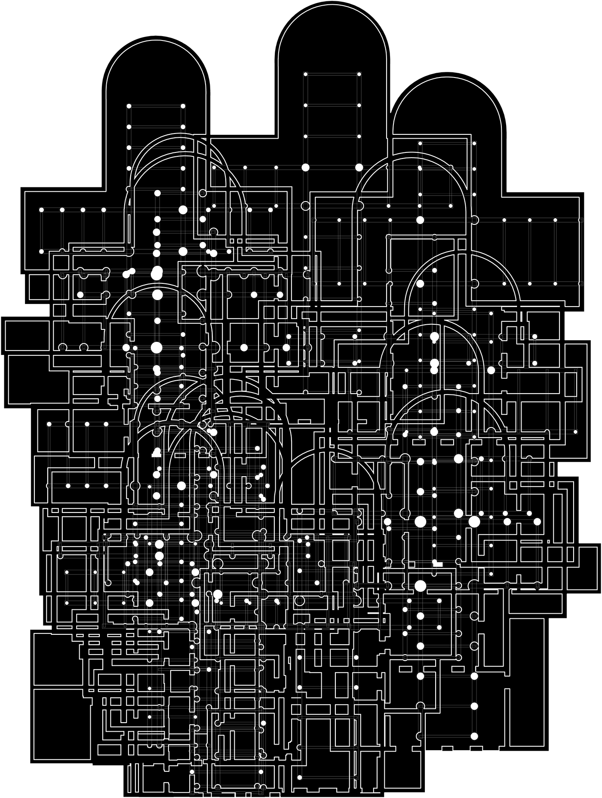
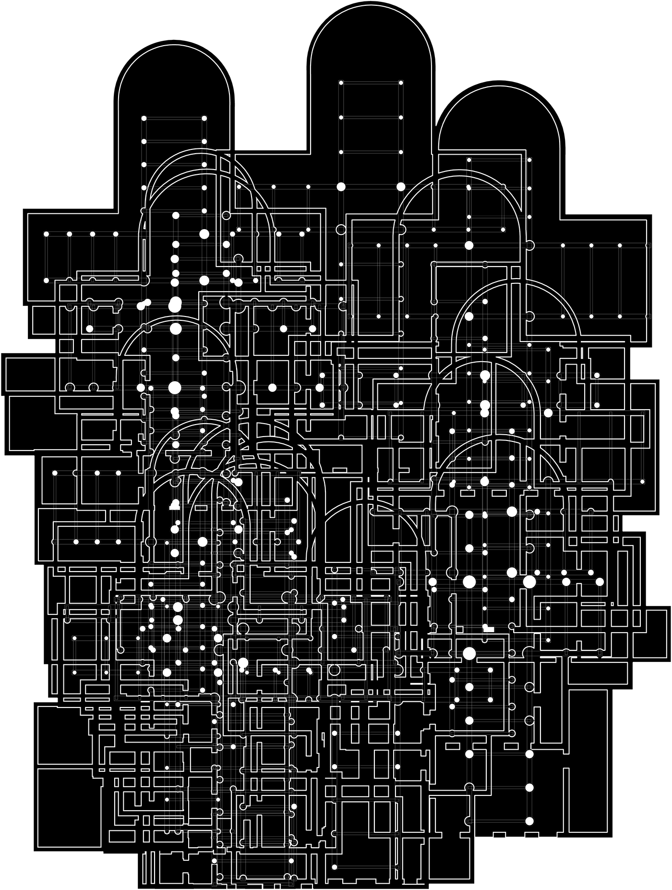

Procedural Church Generator
Procedural Church Generator was an exploration into procedurally generated floor plans. The project looked at the classical, architectural concept of cross-in-plan churches. The Grasshopper definition attempts to replicate their form while simultaneously loosening and randomizing the geometric restrictions. Resulting in a definition, that is capable of creating an infinite number of unique churches each with its own complex and provocative spatial relationships.
Once these churches are generated, there was a question of what to do with them. I looked towards other architects who’ve used a kit of parts to make something new. This brought me to designers like Keith Krumwiede and Andrew Kovacs who drew from drastically different sources to create fascinating collaged proposals.

 
